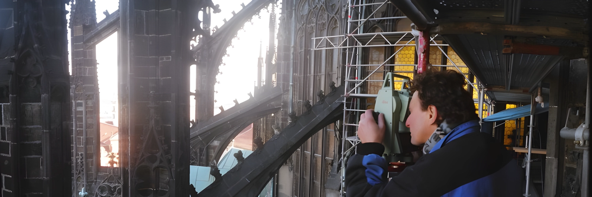

Zastoupil a Král zeměměřiči
Zastoupil a Král zeměměřiči byla geodetická kancelář činná v letech 1998–2024.
Vedle běžných geodetických prací se zabývala také dokumentací stavebních památek.
Fotografie: Chrám svatého Víta, Praha, severní průčelí
